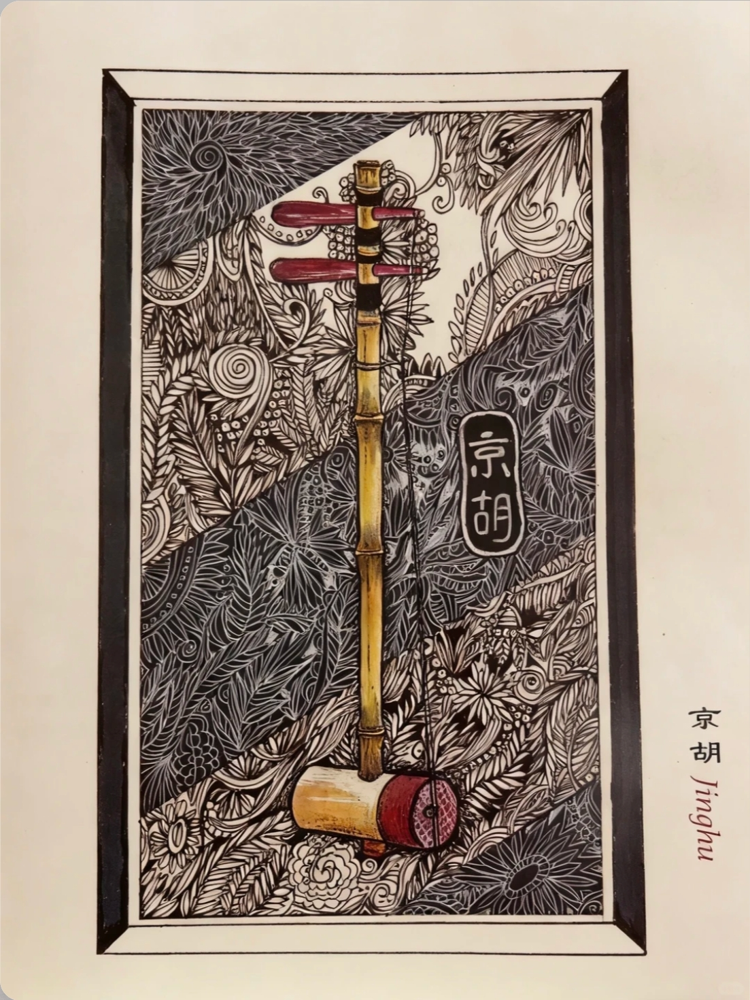

丝竹托腔，锣鼓定势，声声皆为人物而发。
京剧唱腔以板腔体为主。速度、节拍和旋律随剧情变化，让人物情绪有了可听见的轮廓。
旋律活泼明朗，常表现欢快、激昂或紧张情绪。
旋律平稳深沉，善于表达沉思、悲怆与庄重情绪。

京胡音色高亢明亮，紧随演员行腔。它既伴奏旋律，也回应人物情绪。
开场、亮相、交锋、转折，都由打击乐组织节奏。
留一点安静，听唱腔与伴奏如何共同讲述人物。
唱腔塑造人物，文场铺陈情绪，武场控制舞台节奏。